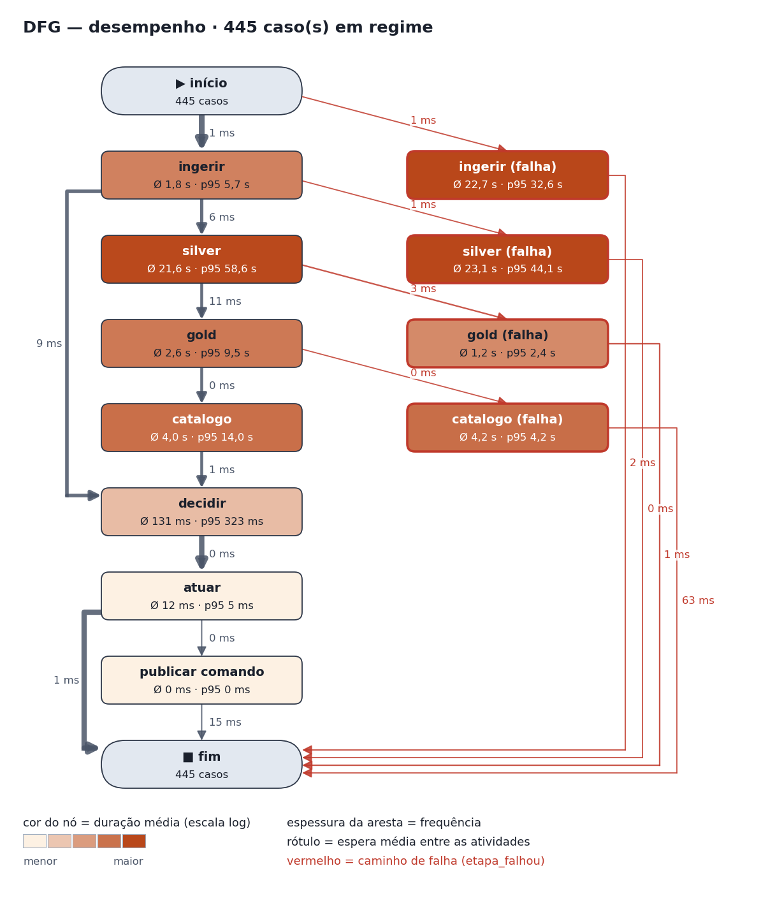

Diferencial competitivo
Não é mais um painel de gráficos.
Decisão explicável
— cada ação cita o dado e o limiar que a motivaram
Dado confiável
para automatizar — contratos, quarentena, linhagem
Automação segura por desenho
— trava do sequeiro em 3 camadas
Se mede e melhora
— Prometheus/Grafana, 6 alertas, mineração de processos
Stack aberta
— custo marginal baixo; roda local, na cooperativa ou na nuvem
ciclo do worker, após a 1ª análise de processo
30,3 s → 10,3 s
66 % mais rápido
· 445 ciclos reais minerados

DFG de desempenho
AgroSmart · Fase 7 · 4ESOA
5 / 9